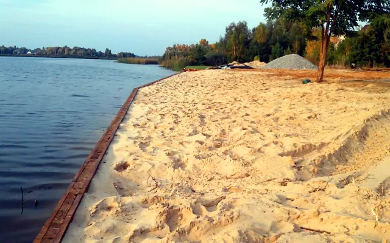

П'ять способів зупинити воду
Від суворої бетонної лінії набережної до природного кам'яного берега приватного ставка. Підбираємо конструкцію під навантаження, естетику та бюджет.

Бетонний шпунт
Капітальне рішення для набережних, марин і ділянок з високим навантаженням. Строк служби — десятиліття.

Дерев'яний шпунт
Тепла природна естетика для приватних садиб і пляжів. Модрина або дуб, оброблені для контакту з водою.

Пластиковий шпунт
Не гниє, не кородує, легкий у монтажі. Оптимальний для ставків, каналів і невеликих водойм.

Габіони
Сітчасті короби з природним каменем. Дренують, «дихають», з часом заростають і виглядають як частина ландшафту.

Бутове мощення
Викладений камінь по геотекстилю — м'який природний берег, стійкий до хвилі та льоду.

Комбіновані рішення
Бетонна основа + дерев'яна обшивка, габіон + тераса, шпунт + пляж. Поєднуємо міцність із естетикою.


{kind=link}
{kind=link}
{kind=link}
{kind=link}
{kind=link}
{kind=link}
{kind=link}
{kind=link}
{kind=link}
{kind=link}
{kind=link}
{kind=link}
{kind=link}